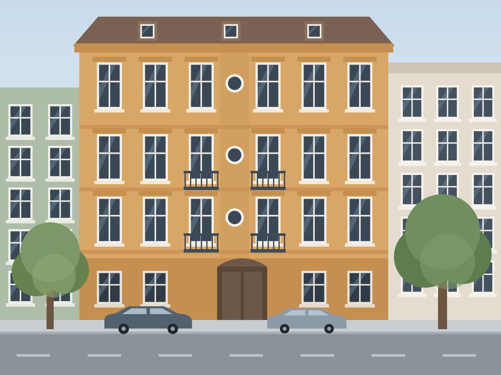
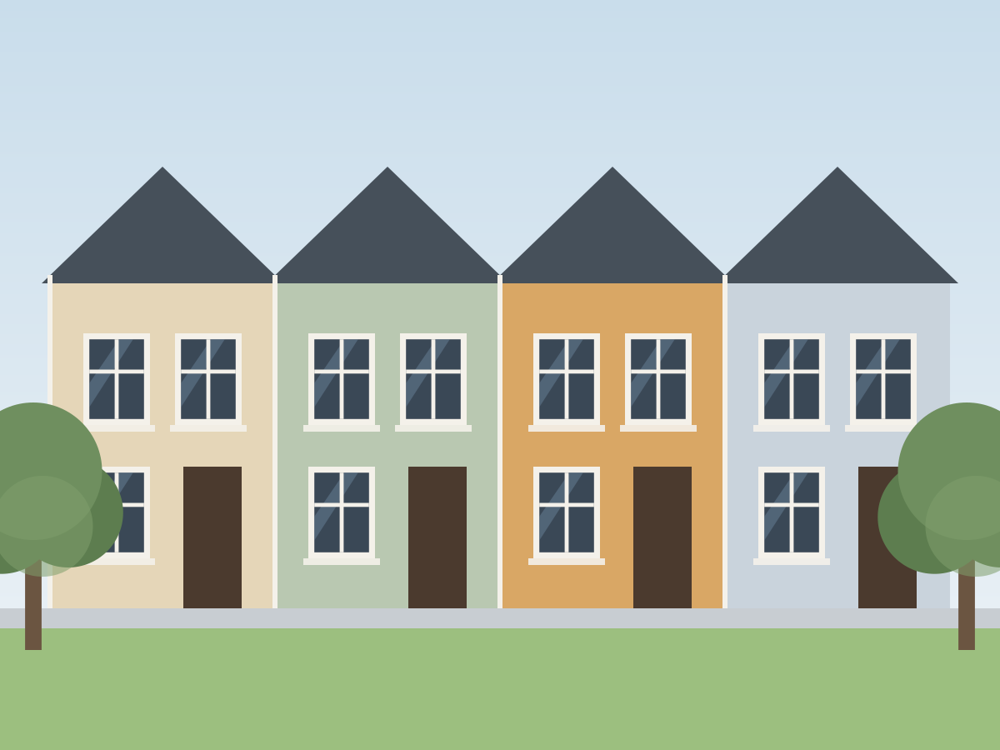
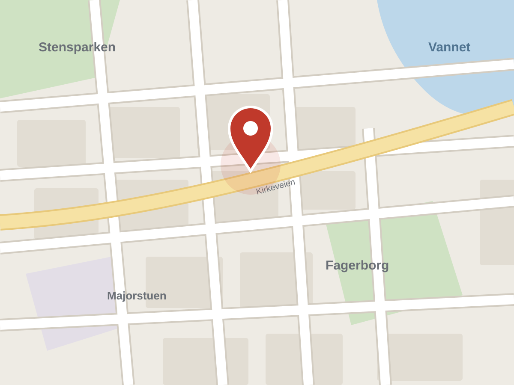
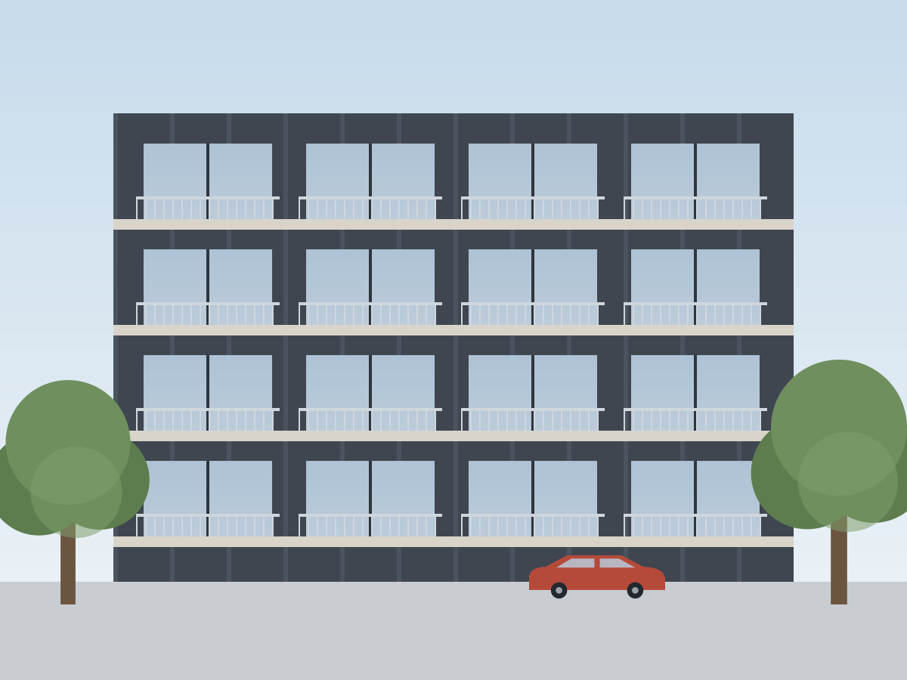

Design harness · v0.1
Practical by design.
Nordic by nature.
Oldschool brings back what the Scandinavian web got right in the 2000s — information first, boxes on a calm canvas, real underlined links, facts you can scan — and rebuilds it with modern CSS, design tokens and Nordic restraint.
- 8 themes × light/dark
- 45+ components
- WCAG 2.2 AA, checked
- ~20 kB CSS gzipped, zero deps

Same markup, twenty years apart
All themesBoth boxes below are the identical HTML. The left is scoped to data-theme="retro", which reconstructs the 2011 original — Arial, 13px text, square corners, a pale-blue frame. The right is the default modern theme. Structure survives; only tokens change.
Lys og koselig 1-roms med flott beliggenhet
Prisinformasjon
Leie pr. måned7 500 kr
- Depositum
- 30 000 kr
- Leie inkluderer
- fyring, varmtvann
data-theme="retro"data-theme="fjord"Principles
Read from the 2011 page, then held to today’s standards. The full rationale lives in DESIGN.md.
01Content first, chrome last
The page is a document. Decoration never competes with information.
02Boxes on a calm canvas
Related facts live together in panels with a tinted header band; the canvas does the separating.
03Links look like links
Colored and underlined in content. Visited links are marked in result lists.
04Label : value
Facts in quiet-label, strong-value lists with hairline rhythm and tabular numbers.
05The important number is big
Price and key figures get display size. Everything else stays calm.
06Always know where you are
Breadcrumbs, “result 3 of 128”, previous and next — on every detail page.
07Actions are words
Icon plus text. Icon-only only where space forces it, and then with a label for assistive tech.
08Say the essentials twice
Price and contact repeat where the eye needs them: the aside on desktop, the bottom bar on phones.
09Lagom
Just enough: one accent color, flat surfaces, hairlines over shadows, motion only to explain.
10Universal design
WCAG 2.2 AA is the floor — contrast is tested for every theme, plus keyboard, zoom, print and forced colors.
11Swap, don’t fork
Every visual decision is a token. New brand? New ramps. New density? One attribute.
12Works without the extras
No JavaScript? Menus, filters, galleries and dialogs still work. Old browser? You get light mode.
Explore
- ListingThe 2011 detail page, rebuilt — gallery, facts, contact, map.

SearchFilters as a sheet on phones, results as rows or cards. ComponentsEvery component with live demo and copy-ready markup.
ComponentsEvery component with live demo and copy-ready markup.
TokensPalette, semantic colors, type, space — live values. ThemesEight schemes in light and dark, and a generator for your own.
ThemesEight schemes in light and dark, and a generator for your own.
DevicesDesktop, tablet and phone side by side.
Quick start
1 · Link the files
<link rel="stylesheet" href="oldschool/dist/oldschool.css">
<script src="oldschool/dist/oldschool.js" defer></script>2 · Pick a theme (optional)
<html lang="nb" data-theme="furu" data-mode="auto">3 · Build with boxes
<section class="os-panel">
<header class="os-panel__header">
<h2 class="os-panel__title">Fakta</h2>
</header>
<div class="os-panel__body">
<dl class="os-kv">
<div><dt>Soverom</dt><dd>1</dd></div>
</dl>
</div>
</section>Using Tailwind, React, or another platform? Start from dist/tailwind.css, dist/tokens.json and docs/adoption.md.